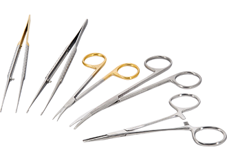

07 70 55 07 40
de 09:00 jusqu'a 20:00
de 09:00 jusqu'a 20:00
Clinique Benosman, Mostaganem.

DR.CH.G Lakehal Larbi plus de 35 ans d'expérience dans le métier
Développement de la chirurgie ambulatoire qui représente actuellement 80% de nos interventions à Clinique de la Sauvegarde Organisation personnelle de Pilot Center (Formation de chirurgiens) depuis 2008 pour la Chirurgie Pariétale (hernies) Coelioscopique en ambulatoire 2 à 3 sessions par an. Développement de la chirurgie oncologique (env. 50 procédures /an) : laparoscopie pour cancer du colon et du rectum, cancer gastrique et du pancréas, métastases hépatiques. Consultant associé d'HCM (Hôpital Concept Management): Société de conseil et d'audit des établissements de santé sur la chirurgie ambulatoire et la récupération améliorée après Attaché des Hospices Civils de mostaganem . dans le Service de Chirurgie Viscérale et de Transplantation Hépatique du Pr Mabrut à l’Hôpital che gue vara : pour la chirurgie de centre de référence avec réanimation (hépatectomies majeures, chirurgie du cancer de l’œsophage) Expérience de chirurgie colorectale en ambulatoire depuis 1980.
2010-actuellement ,chef de service de chrugie génrale et radioscanner département . 2006-2010 : Chef de service du Service de Chirurgie Générale et Digestive à la Clinique Mutualiste de mecheria 2004-2006 : Praticien Hospitalier dans le Service d’Urgence Chirurgicale Viscérale du Pr Tissot, Hôpital che gue vara , mostaganem 2003-2004 : Chef de Clinique à la Faculté benhamad, Université l'usto,oran. Assistant dans le service de Chirurgie du che gue vara, CHU mostaganem 2000-2003 : Assistant dans le Service d’Urgence Chirurgicale Viscérale du che gue vara. 1979 – 1999 : assistant dans les service d'urgence chirurgical d'oran. 1975-1979 -Internat de chirurgie générale et viscérale .